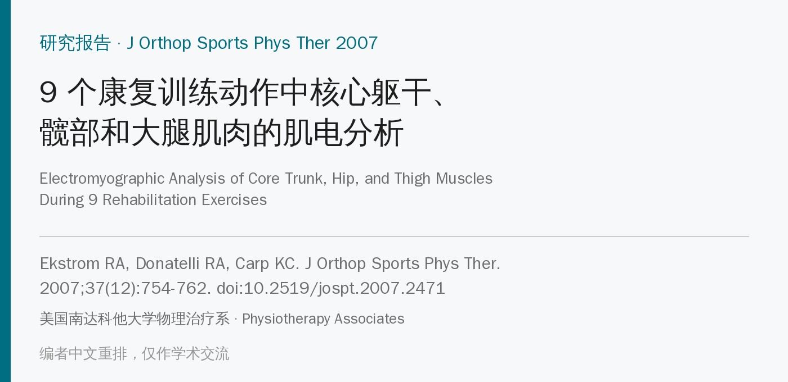
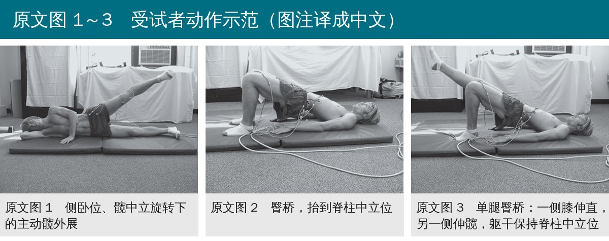
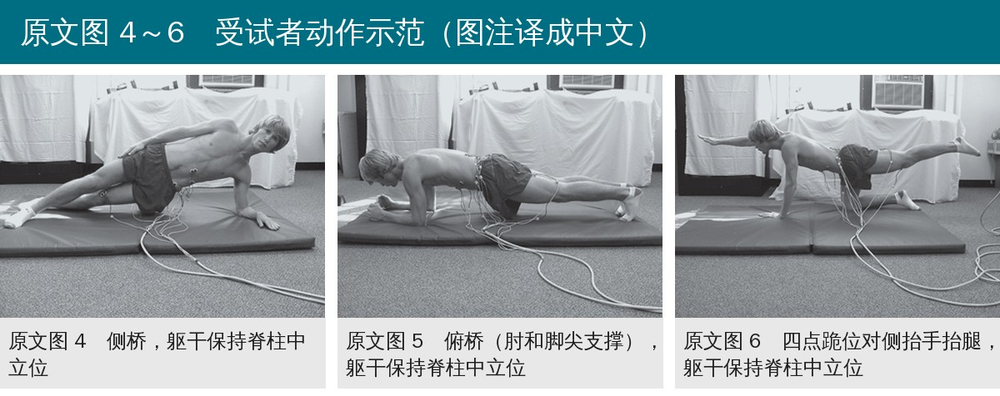
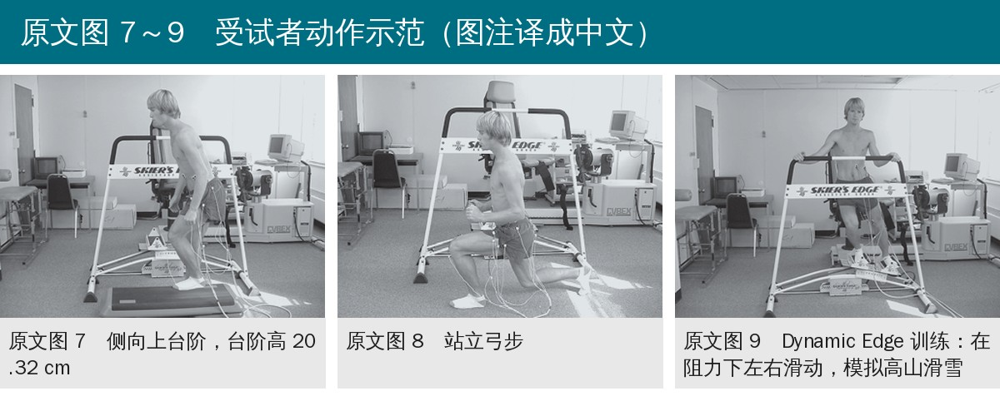
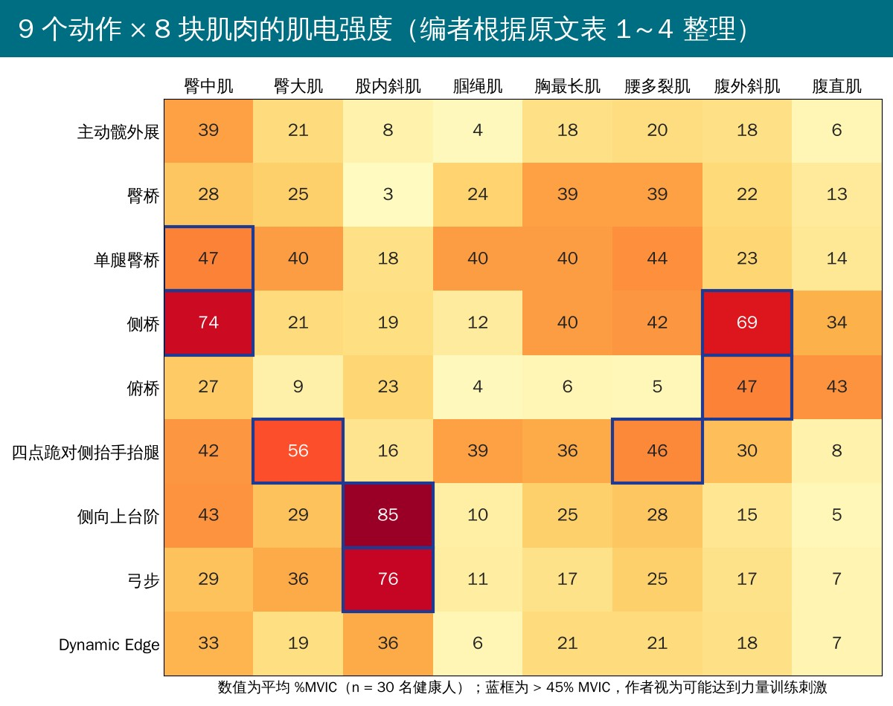
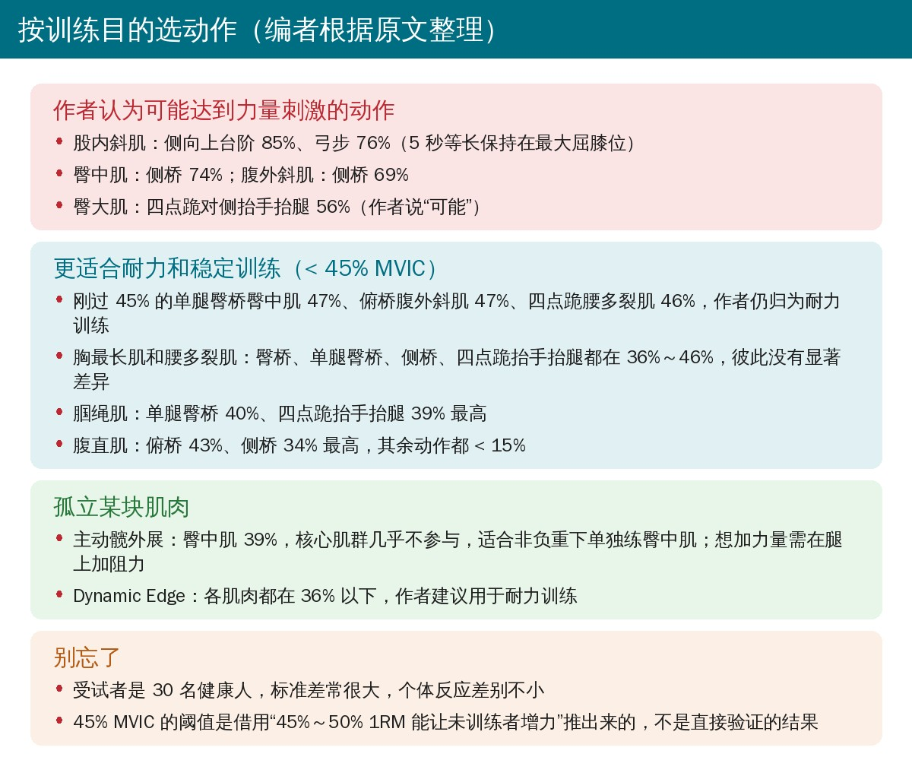

🔖原文信息（编者中文重排）
📚 文献信息
▪ Ekstrom RA, Donatelli RA, Carp KC. Electromyographic analysis of core trunk, hip, and thigh muscles during 9 rehabilitation exercises. J Orthop Sports Phys Ther. 2007;37(12):754-762. doi:10.2519/jospt.2007.2471
▪ 中文题目：9 个康复训练动作中核心躯干、髋部和大腿肌肉的肌电分析
▪ 作者来自美国南达科他大学物理治疗系、Physiotherapy Associates
▪ 研究类型：前瞻性、单组、重复测量设计
康复训练遵循“特定需求产生特定适应”的原则：想增加力量或耐力，就要针对薄弱或对活动重要的肌群。但臀桥、侧桥这类自重动作，治疗师没法知道肌肉实际承受多少阻力。表面肌电能反映肌肉激活程度，帮助判断一个动作更适合练力量，还是练耐力和稳定。
• 腰伸肌、臀大肌和髋外旋肌无力、耐力差，与下肢损伤和腰痛有关
• 未受伤运动员的髋外展和外旋肌力更强；髌股疼痛女性的髋外展、伸、外旋肌力更弱，强化后疼痛、下肢运动学和功能都有改善
• 躯干和髋部肌肉对高尔夫、棒球挥杆的力量和准确性也很重要
• 研究目的：量化 9 个常用动作中躯干、髋和大腿肌肉的激活，找出适合力量训练和适合耐力 / 稳定训练的动作
• 受试者：30 名健康人（男 19、女 11），19～58 岁，平均 27 岁；无下肢或腰背问题
• 8 块肌肉：腹直肌、腹外斜肌、胸最长肌、腰多裂肌、臀大肌、臀中肌、股内斜肌、腘绳肌；单侧贴表面电极，电极中心距 20 mm
• 标准化：每块肌肉做 3 次最大自主等长收缩（MVIC），每次 5 秒；动作中的肌电以 %MVIC 表示
• 9 个动作，随机顺序：主动髋外展、臀桥、单腿臀桥、侧桥、俯桥（肘和脚尖）、四点跪对侧抬手抬腿、侧向上台阶（20.32 cm）、站立弓步、Dynamic Edge 滑雪模拟器
• 躯干稳定动作做 3 次、每次保持 5 秒；上台阶和弓步慢速全程，在最大屈膝处保持 5 秒；Dynamic Edge 连续左右滑动
• 信号处理：全波整流、均方根平滑（20 毫秒窗），取峰值附近 1 秒的平均幅值；每块肌肉做单因素重复测量方差分析，P < 0.05
• 13 人重复做臀桥和四点跪抬手抬腿，检验同日重测信度

🔖原文图 1～3（照片为原图，图注编者译成中文）

🔖原文图 4～6（照片为原图，图注编者译成中文）

🔖原文图 7～9（照片为原图，图注编者译成中文）
• 信度：臀桥和四点跪抬手抬腿的组内相关系数分别为 0.86 和 0.93，但测量标准误约 20% MVIC
• 臀中肌：侧桥最高（74% ± 30%），显著高于其余 8 个动作
• 臀大肌：四点跪对侧抬手抬腿最高（56% ± 22%），显著高于其余动作；其次是单腿臀桥 40%、弓步 36%
• 股内斜肌：侧向上台阶 85% ± 17%、弓步 76% ± 19%，两者差异不显著，都显著高于其他动作
• 腘绳肌：单腿臀桥 40%、四点跪抬手抬腿 39% 最高，两者相当
• 胸最长肌和腰多裂肌：臀桥、单腿臀桥、侧桥、四点跪抬手抬腿相近（36%～46%），显著高于其余动作；俯桥只有 5%～6%
• 腹外斜肌：侧桥最高（69% ± 26%）；腹直肌：俯桥 43%、侧桥 34% 最高，两者差异不显著

🔖编者根据原文表 1～4 整理
• 45% MVIC 当作力量训练门槛：既往研究显示 45%～50% 1RM 的负荷能让未训练者增加力量，所以平均超过 45% MVIC 的动作“可能”提供力量刺激
• 按这个标准，侧桥、侧向上台阶、弓步，可能还有四点跪对侧抬手抬腿，对相应肌肉有力量训练价值；其余多数动作更适合耐力或运动控制训练
• 侧桥练臀中肌：以前很少把侧桥当臀中肌力量训练，可以加入方案
• 臀桥 / 单腿臀桥：Arokoski 等发现女性的背伸肌激活明显高于男性，所以部分人尤其女性可能从中获得力量效果
• 主动髋外展：核心稳定肌参与很少，但能孤立臀中肌（39%），加外部阻力后可用于非负重下的臀中肌力量训练
• 臀桥、单腿臀桥、侧桥、俯桥和四点跪抬手抬腿都有多肌群共同激活，适合稳定和耐力训练；Dynamic Edge 适合耐力训练

🔖编者根据原文整理
• 人群：30 名健康青年为主，不能直接外推到腰痛、髌股疼痛或术后患者，作者也提醒了这一点
• 45% MVIC 门槛是推理，不是验证：%MVIC 和 %1RM 不是一回事，肌电幅值与力的关系还可能非线性；用它划分“力量”和“耐力”动作只是粗略参考
• 变异大：标准差常接近均值的一半甚至更大（侧桥臀中肌 74% ± 30%），测量标准误约 20% MVIC，个体能否达到门槛差别很大
• 静态保持：上台阶和弓步取的是最大屈膝位 5 秒等长保持，和临床常用的动态做法不同，数值不能直接对标动态训练
• 串扰：臀中肌电极靠近臀大肌，可能有串扰；表面电极能否准确记录多裂肌仍有争议
• MVIC 姿势：臀中肌在外展末端测 MVIC，测试姿势会影响分母，进而影响所有 %MVIC 数值
• 价值在于相对比较：受试者内设计，同一块肌肉在不同动作间的高低排序比绝对数值更可靠
• 俯桥的两块腹肌数值对调：讨论写俯桥时腹直肌 47% ± 21%、腹外斜肌 43% ± 21%，而表 4 是腹外斜肌 47%、腹直肌 43%
• 弓步股内斜肌：结果正文写 77% ± 19%，表 2 和讨论都是 76% ± 19%
• 四点跪臀大肌标准差：表 1 和结果是 56% ± 22%，讨论是 56% ± 23%
• 结论和门槛不一致：结论说主动髋外展“对臀中肌非负重力量训练有效”，但它只有 39% MVIC，低于作者自己定的 45% 门槛，需要额外加阻力才成立
• 笔误：表 4 脚注“external oblique obdominis”（应为 abdominis）；讨论中“rectus abdominus”（应为 abdominis）、“Aroskoski”（应为 Arokoski）
• 先想清楚练什么：要力量就选高激活动作，要耐力和控制就选中低激活动作做长时间保持或多次重复
• 练股内斜肌：侧向上台阶和弓步激活最高，可在最大屈膝位加 5 秒等长保持
• 练臀中肌：侧桥激活最高，同时练到腹外斜肌；不能负重或侧桥做不了时，用侧卧髋外展加阻力
• 练臀大肌：四点跪对侧抬手抬腿最高，单腿臀桥次之
• 练腰背伸肌耐力：臀桥、单腿臀桥、侧桥、四点跪抬手抬腿差不多，按患者能力选择；俯桥几乎不练背伸肌
• 练腹肌：侧桥和俯桥激活最高；要练腹肌力量，作者建议参考其他更针对的动作
• 因人调整：数据来自健康人且个体差异大，体能好的人需要更大刺激，患者则可能在较低激活下就有效
表 1 9 个动作中臀中肌和臀大肌的肌电活动
| 动作 | 臀中肌 | 臀大肌 |
|---|---|---|
| 1. 侧桥 | 74 ± 30† | 21 ± 16 |
| 2. 单腿臀桥 | 47 ± 24‡ | 40 ± 20‡ |
| 3. 侧向上台阶 | 43 ± 18‡ | 29 ± 13 |
| 4. 四点跪对侧抬手抬腿 | 42 ± 17‡ | 56 ± 22† |
| 5. 主动髋外展 | 39 ± 17‡ | 21 ± 16 |
| 6. Dynamic Edge | 33 ± 16 | 19 ± 14 |
| 7. 弓步 | 29 ± 12 | 36 ± 17‡ |
| 8. 臀桥 | 28 ± 17 | 25 ± 14 |
| 9. 俯桥 | 27 ± 11 | 9 ± 7 |
注：数值为均值 ± 标准差，%MVIC；n = 30；P < 0.05。† 臀中肌：动作 1 显著高于动作 2～9；臀大肌：动作 4 显著高于其他所有动作。‡ 臀中肌：动作 2～5 之间无显著差异，但都显著高于动作 7～9；臀大肌：动作 2 和 7 之间无显著差异，但都显著高于动作 1、3、5、6、8、9。
表 2 9 个动作中股内斜肌和腘绳肌的肌电活动
| 动作 | 股内斜肌 | 腘绳肌 |
|---|---|---|
| 1. 侧向上台阶 | 85 ± 17† | 10 ± 6 |
| 2. 弓步 | 76 ± 19† | 11 ± 6 |
| 3. Dynamic Edge | 36 ± 12 | 6 ± 3 |
| 4. 俯桥 | 23 ± 13 | 4 ± 6 |
| 5. 侧桥 | 19 ± 11 | 12 ± 11 |
| 6. 单腿臀桥 | 18 ± 13 | 40 ± 17† |
| 7. 四点跪对侧抬手抬腿 | 16 ± 11 | 39 ± 14† |
| 8. 主动髋外展 | 8 ± 8 | 4 ± 3 |
| 9. 臀桥 | 3 ± 3 | 24 ± 14 |
注：数值为均值 ± 标准差，%MVIC；n = 30；P < 0.05。† 股内斜肌：动作 1 和 2 之间无显著差异，但都显著高于其他所有动作；腘绳肌：动作 6 和 7 之间无显著差异，但都显著高于其他所有动作。
表 3 9 个动作中胸最长肌和腰多裂肌的肌电活动
| 动作 | 胸最长肌 | 腰多裂肌 |
|---|---|---|
| 1. 单腿臀桥 | 40 ± 16† | 44 ± 18† |
| 2. 侧桥 | 40 ± 17† | 42 ± 24† |
| 3. 臀桥 | 39 ± 15† | 39 ± 15† |
| 4. 四点跪对侧抬手抬腿 | 36 ± 18† | 46 ± 21† |
| 5. 侧向上台阶 | 25 ± 10 | 28 ± 10 |
| 6. Dynamic Edge | 21 ± 10 | 21 ± 11 |
| 7. 主动髋外展 | 18 ± 14 | 20 ± 12 |
| 8. 弓步 | 17 ± 8 | 25 ± 11 |
| 9. 俯桥 | 6 ± 4 | 5 ± 4 |
注：数值为均值 ± 标准差，%MVIC；n = 30；P < 0.05。† 两块肌肉在动作 1～4 之间均无显著差异，但都显著高于动作 5～9。
表 4 9 个动作中腹外斜肌和腹直肌的肌电活动
| 动作 | 腹外斜肌 | 腹直肌 |
|---|---|---|
| 1. 侧桥 | 69 ± 26† | 34 ± 13† |
| 2. 俯桥 | 47 ± 21 | 43 ± 21† |
| 3. 四点跪对侧抬手抬腿 | 30 ± 18 | 8 ± 7 |
| 4. 单腿臀桥 | 23 ± 16 | 14 ± 13 |
| 5. 臀桥 | 22 ± 13 | 13 ± 11 |
| 6. 主动髋外展 | 18 ± 10 | 6 ± 4 |
| 7. Dynamic Edge | 18 ± 12 | 7 ± 5 |
| 8. 弓步 | 17 ± 11 | 7 ± 5 |
| 9. 侧向上台阶 | 15 ± 10 | 5 ± 3 |
注：数值为均值 ± 标准差，%MVIC；n = 30；P < 0.05。† 腹外斜肌：动作 1 显著高于动作 2～9；腹直肌：动作 1 和 2 之间无显著差异，但都显著高于动作 3～9。原表各自按左列肌肉的激活从高到低排序。
欢迎关注骨科康复小黄公众号，获取更多物理治疗的专业知识！
📄参考文献：
Ekstrom RA, Donatelli RA, Carp KC. Electromyographic analysis of core trunk, hip, and thigh muscles during 9 rehabilitation exercises. J Orthop Sports Phys Ther. 2007;37(12):754-762. doi:10.2519/jospt.2007.2471
本文为中文解读，仅作学术交流：照片引自原文图 1～图 9（图注由编者译成中文），肌电热图和选动作卡为编者根据原文表 1～4 整理，表格为编者翻译。原文 © 2007 Journal of Orthopaedic & Sports Physical Therapy，版权归原出版方所有。